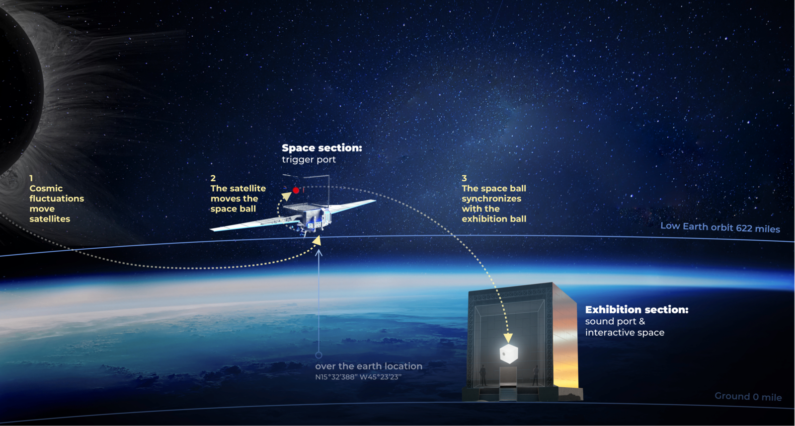
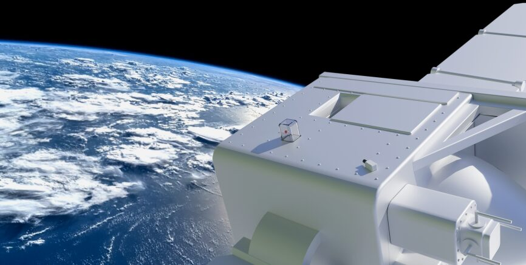
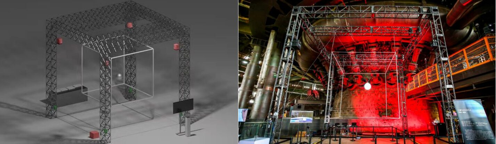
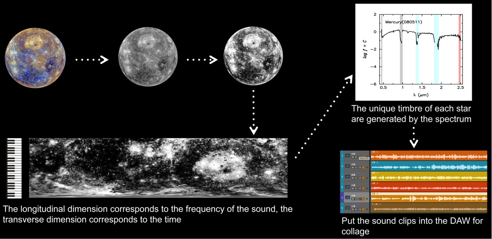
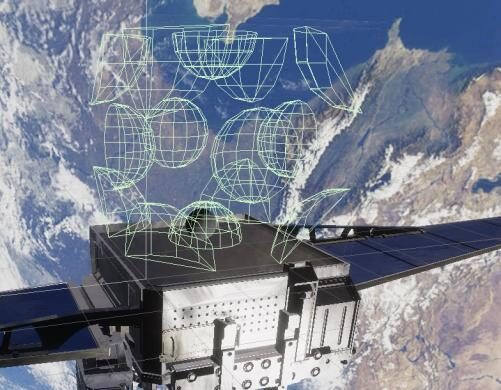
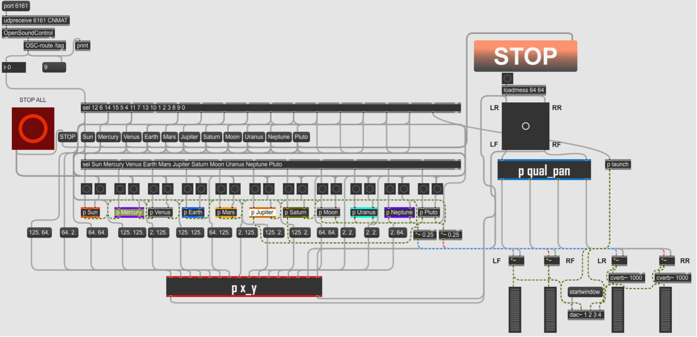
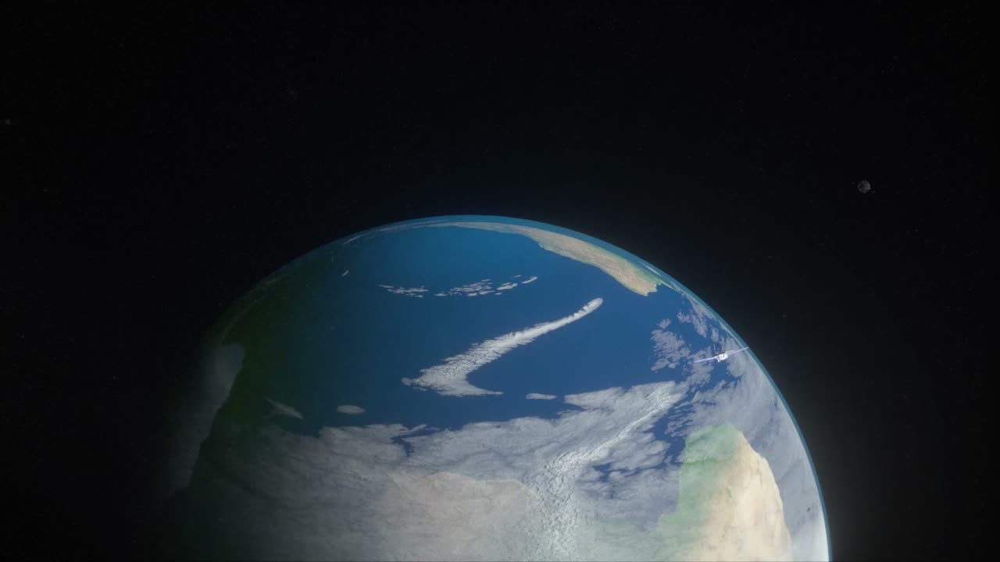
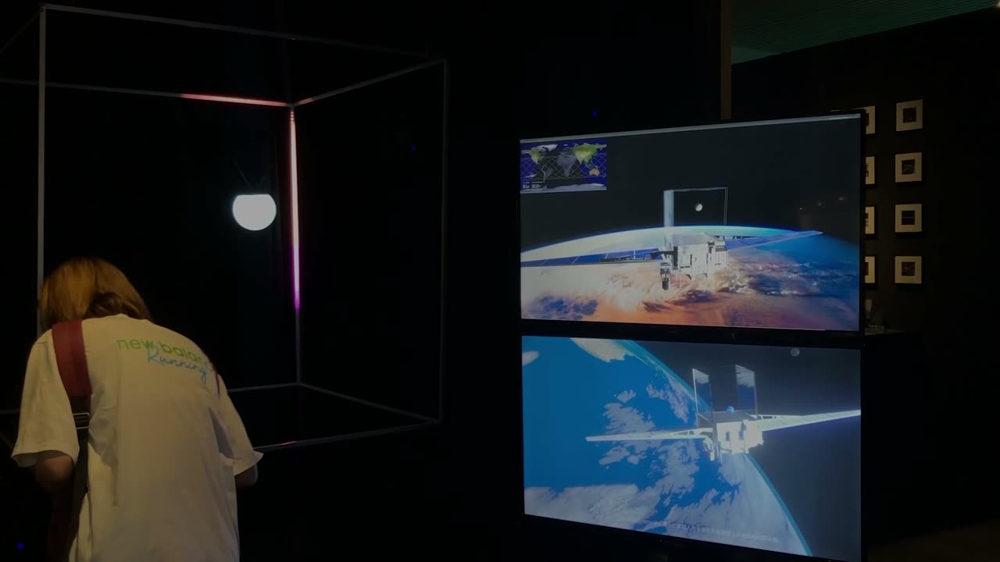

Cosmusica: a Digital Musical Instrument for Interacting with the Universe
Cosmusica: a Digital Musical Instrument for Interacting with the Universe
Authors
Zhaorui Liu1, Chuyi Cui2, Yiyun Qiu3, Danqing Shi3, Zijin Li4,*
1China Conservatory of Music, 2Longy School of Music of Bard College, 3Tsinghua University, 4Central Conservatory of Music
PubPub Link
https://nime.pubpub.org/pub/h6cgd7v4/draft?access=cix6qaf5
Abstract
"Cosmusica" is a new digital musical instrument that realizes the interaction between human and the universe. The gesture input and sound output of "Cosmusica" are located in two spaces of low earth orbit satellite and earth respectively. On the one hand, as the gesture input of the musical instrument, the silicone ball installed on the satellite solar panel moves slowly and irregularly under the influence of the microgravity environment of space, its motion trajectory is collected by the vision sensor and sent to the earth and restored as the performance gesture; On the other hand, the electromagnetic wave data received by the satellite from all directions of the universe are audibly converted, and then re-collaged them into multiple audio clips as the preset sound, and various sound effects are added to the preset sound through Max/MSP’s real-time sound synthesis function. When the silicone ball moves into the preset trigger area in space, earth and space sound materials will be activated simultaneously. Thus the mapping is formed between the trajectory of the ball under the influence of space microgravity and the audible space sound of human ears.
Requirements
We have created a website to display the "Cosmusica" online. The website contains detailed information on source of inspiration, live video presentation, which can be freely enjoyed by the audience. As the "Cosmusica" will be running continuously, we recorded live videos of the "Cosmusica" in many exhibitions and clipped some of them on the website. The website is: https://www.yiyunqiu.com/cosmusica
Program Description
1.Overall description
New digital musical instruments have great potential for sound creation and interaction. By taking the data obtained from scientific exploration as the basis for building musical instruments and designing their interaction mode, new musical instruments can be created that interact with nature. By converting the electromagnetic waves from the universe received by the satellite detector into audible sounds that can be heard by human ears. Therefore, based on the support of these electromagnetic wave data, we will design "Cosmusica" on the framework of new digital musical instruments to interact with the universe in real-time on an acoustic level.
The sound interaction system of "Cosmusica" consists of three parts: input, output and mapping strategy, as shown in Figure 1. The input is located on the satellite in space, which is responsible for collecting the trajectory of the ball in space and the longitude and latitude data of the satellite; The output is an installation located on the ground, which respectively outputs the sound of each star in the solar system and the characteristic sound of the relative region of the earth; The mapping strategy is an agency between input and output. The audience will be able to hear and interact on earth with the sounds from different stars in the solar system through the linkage of these three parts.


Figure 1: The sound interaction system of "Cosmusica"
2.Input
The input of "Cosmusica" is consists of a transparent box and a monocular camera on the satellite solar panel as shown in Figure 2. The case is made of transparent quartz glass. The silicone ball in the box moves slowly and erratically under the influence of universe fluctuations, satellite attitude adjustment and the microgravity environment of space. The monocular camera next to the box is used to capture the movement of the ball inside the box. OpenCV visual identification code is used to identify the contour of the silicone ball, calculate the center point of the graph as the spatial position of the ball, and generate the movement trajectory of the ball through the position information of different frames over time. The data intermediary of "Cosmusica" is implemented in Unity. The earth receives the data transmitted by satellite and transmits it to Unity and PC through TCP.


Figure 2: "Cosmusica" is located on the satellite
3.Output
The output of "Cosmusica" is a large music installation, as shown in Figure 3, which consists of a sound playback system, a Three-Dimensional lifting structure, metal frames and a PVC ball.
The sound playback system uses four studio monitors and a studio subwoofer (the red part on the left of Figure 3) to play the sound related to the stars, and carries out real-time control through Max/MSP. The orientation of the sound source corresponds to the area triggered by the ball, so as to create a better auditory experience and immersion effect; The earth-related sound is played back by a Bluetooth speaker installed inside the PVC ball.
The metal frames and the PVC ball (the silver part on the left of Figure 3) on the installation form an enlarged version of the "Cosmusica", and pull the PVC ball through the Three-Dimensional lifting structure to restore the movement track of the silicone ball in space. After receiving the data transmitted from space, the program in Unity starts to simulate the movement and sends the XYZ position, speed, transmission rate and other parameters of the ball to PLC in real-time, and then the servo motor (the green part on the left of Figure 3) installed on the four columns pulls the PVC ball, so as to achieve synchronization with the ball in space.


Figure 3: The output of the "Cosmusica". (The left picture shows the rendering of the installation structure; The right picture shows the actual display effect)
4.Sound Design
"Cosmusica" uses visible light waves in the electromagnetic waves as the main part of planet sound conversion. After the image of each star is scanned by radar along the radius direction, a waveform with star characteristics can be obtained, and the longitudinal dimension corresponds to the frequency of the sound, the transverse dimension corresponds to the time, and the brightness information corresponds to the sound loudness. At the same time, the harmonic component coefficient generated by the spectrum is taken as the unique timbre of each star, so that the unique sound clip belonging to each planet is obtained. In addition, in terms of the sound design of star, the sound conforming to the geological characteristics of each star is added, so as to generate the final sound of each star in "Cosmusica". The process of sound conversion is as follows:


Figure 4: The process of sound conversion
The earth-related sound part of "Cosmusica" is created based on the movement trajectory of satellite in space. The representative areas of satellite flights include China, India, Brazil, Australia, South Africa, etc. "Cosmusica" includes some sound clips created for these areas to match the local music style. When the box passes over a specific area, the ground installation will automatically play the sound of the corresponding area. Thus the most representative sound from each region of the earth is blended with the sound from the universe.
5.Mapping Strategy
The gesture input (space) and sound output (earth) of "Cosmusica" are related by specific mapping strategies.
There are multiple trigger zones preset in the simulation box (each zone represents a different star in Figure 5) of Unity program. When the ball and satellite move to a specific trigger zone, Unity will automatically send a trigger signal to Max/MSP through TCP, where the OSC module is used to receive data. Then Max/MSP selects the received trigger signal to trigger the corresponding preset sound. In addition, the Max/MSP program also adds sound effects that meet the characteristics of each star. For example, the gravity of the moon causes the tides of the earth. Therefore, the wave sound simulated by white noise is added to the "sub_patch" corresponding to the moon, and the time of occurrence, duration and various parameters of the sounds are randomly generated by Max/MSP. The interface for Max/MSP interactive program is shown in Figure 6.


Figure 5: Trigger zones


Figure 6: The interface for Max/MSP interactive program
6.Future Work
"Cosmusica" is a long-term project. We will develop features with more autonomous movement. By carrying an independent power supply system and adding multiple electromagnets inside the box on the satellite solar panel, it would be possible for people on the earth to remotely change the motion of the ball inside the box.
Media

▶The concept video of the “Cosmusica“

▶The exhibition video of the “Cosmusica”
Acknowledgement
The authors would like to thank Hao Liu from Central Conservatory of Music for some of the technical support.